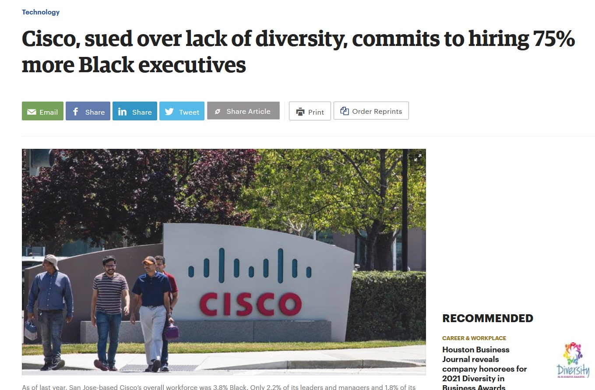

Cisco & Black Employees

Overall Black US Employees
3.8%
Black Leaders & Managers
2.2%
Black Executives VP+
1.8%
Black Board Members
0%
Overall Black US Employees
Black Leaders & Managers
Black Executives VP+
Black Board Members